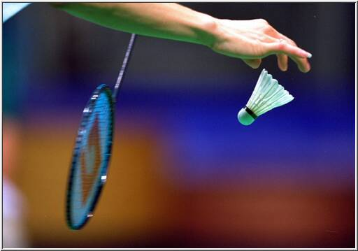

BADMİNTON DUYURU
Ana Sayfa
Nasıl Oynanır
Milli Sporcular
Haberler
İletişim
Hakemler
Badminton Saha Ölçüleri
Tarihcesi
Duyurular
Şampiyonlar
Saygıdeğer Antrenörlerimiz;
Bildiği gibi mevcut sistemde, BWF (Badminton Dünya Federasyonu) ile BE (Avrupa Badminton Federasyonu) arasında gençler şampiyonaları düzenlenirken yaş ve sezon farkı vardı. Bu sistem 2016 yılından itibaren kademeli olarak değişecek.
2016’daki Avrupa Şampiyonalarında
17 yaşta 1999 doğumlular oynayabilecek,
15 yaşta 2001 doğumlular oynayabilecek,

DUYURU 1
DURURU 2
DUYURU 3
DUYURU 4
DUYURU 5
DUYURU 6